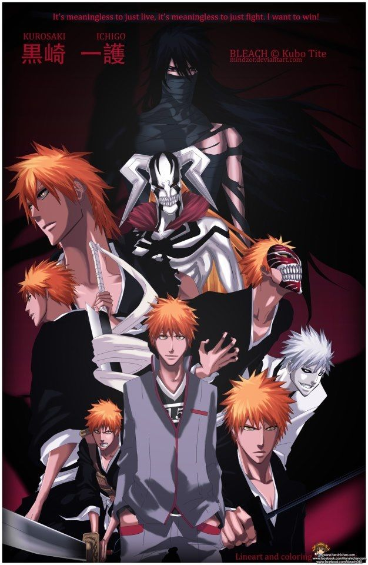

About Ichigo
Ichigo Kurosaki is a fictional character in the Bleach manga series and its adaptations created by Tite Kubo. He is the main protagonist of the series, who receives Soul Reaper powers after meeting Rukia Kuchiki, a Soul Reaper assigned to patrol around the fictional city of Karakura Town.
Ichigo and his friends
Ichigo's Characteristic
- His sword is called a Zanpakutō
- He's got some badass evolution
- His friends are his family